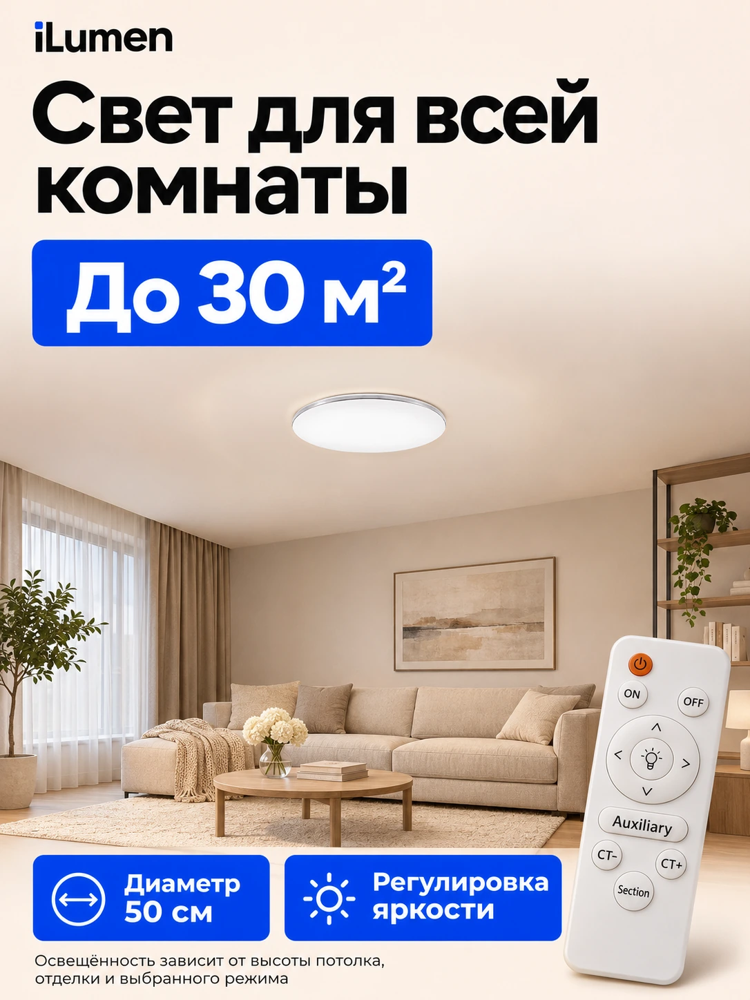

Описание без повторов
Вместо одинаковых абзацев — последовательные ответы: размеры, режимы света, управление, монтаж, комплектация и гарантия. Данные должны совпадать со слайдами и полями характеристик.
Что меняем в карточке iLumen — и почему покупателю станет проще выбрать.
Смотреть до и после iLumen / разбор карточки
iLumen / разбор карточкиНазвание категории заметнее самого светильника.
Гарантия и характеристики расходятся между блоками.
За названием цвета скрывается другая модель.
Крупный светильник и спокойный фон без визуального шума.
Размер, регулировка яркости и пульт собраны вместе.
От первого впечатления — к размеру, управлению и доверию.
«Было» — ваш исходный слайд. «Стало» — предложенный макет. Ниже: весь разбор карточки, а не только инфографики.
Обложка Выбор Доверие
По вашему ТЗ и исходным материалам · 10 ноября 2026Выберите тему. Сравните проблему из аудита с решением и посмотрите, что ещё нужно доработать.
Все 10 исходных слайдов из папки «было». Стиль, режимы и объяснение пульта уже были — сохраняем полезное, меняем акценты и проверяем обещания.
Порядок ниже сгруппирован для разбора. Он не подтверждает порядок изображений в действующей карточке Ozon.
К новой галерееВсе девять обновлённых макетов: восемь слайдов основной истории и альтернативная обложка для теста. Нажмите на слайд — рядом разбор решения и следующий шаг.
Один и тот же светильник воспринимается по-разному. Сценарий объясняет пользу быстрее списка характеристик.
Вечерний отдых и мягкая атмосфера.
Фрагменты вашего слайда. Визуальная иллюстрация, а не измерение освещённости. Точные значения Кельвинов — после сверки с паспортом.

Дизайн помогает увидеть преимущества. Единые и проверенные данные дают основание им доверять.
Основание: переданное ТЗ, прежний аудит и исходные изображения. Описание, размеры, температура, IP20, тип монтажа и гарантия проверены в обычном браузере 10.11.2026. Непроверенные пункты отмечены отдельно. Исправления в действующей карточке Ozon в рамках этой презентации не выполнялись.
Обложка приводит внимание. Название, описание и варианты объясняют, какой именно товар человек заказывает.
На проверенной витрине первые четыре товара имеют одинаковое общее название. У RGB-модели 2151745360 в названии тоже нет RGB и колонки — отличие скрыто за цветом «кремовый».
Повторная проверка подтвердила: в описании дважды встречается Smartbuy и повторяются абзацы. Проверяем фактический бренд и заменяем повторы конкретикой.
Люстра потолочная светодиодная с пультом, 50 см, 120 Вт, белая матовая
Размер, мощность, управление и исполнение видны ещё в выдаче.
Примеры из аудита для использования после проверки характеристик. Бренд добавлять по фактическому бренду товара.
Вместо одинаковых абзацев — последовательные ответы: размеры, режимы света, управление, монтаж, комплектация и гарантия. Данные должны совпадать со слайдами и полями характеристик.
«Белый», «слоновая кость», «кремовый», «зеркальный» не объясняют размер и функции. В пределах возможностей категории сделать выбор понятнее и добавить сравнение 40 см / 50 см / RGB: новый паспорт одного артикула не заменяет такую таблицу.
На обложке оставить светильник, RGB и Bluetooth-колонку. Приложение, будильник и светомузыку раскрыть следующими слайдами, если функции подтверждены. Проверить, показывает ли уже имеющееся видео подключение телефона и работу колонки.
Три конкретные альтернативы, их сильные стороны и слабые места. Нажмите на бренд, чтобы открыть разбор и исходную обложку.
Повторный анализ · 10 ноября 2026
Ozon открыт в обычном Яндекс Браузере. Карточки iLumen и трёх конкурентов проверены 10.11.2026 в одной сессии, с одним выбранным пунктом доставки. Ниже — видимые цены, реальные обложки и замечания. Это срез предложения в аккаунте на момент проверки; скидки и доставка могут измениться.
Круглый светильник, 50 см, 120 Вт и пульт — близкий набор признаков для сравнения с нашей моделью.
Открыть LUCIMO · 1347165797Основание: обложка и карточка, проверенная в браузере. Заявление о площади — данные продавца, не наша проверка освещённости.
Белая круглая MEZZO с пультом. На обложке отдельно подписаны диаметр, световой поток и мощность.
Открыть Smartbuy · 1827059716Основание: российская карточка, открытая в обычном браузере 10.11.2026. Изображение ранее получено с Ozon Беларусь; его оформление совпадает с увиденной российской обложкой.
Альтернатива по сценарию «светильник с пультом». Мощность 80 Вт отличается от iLumen; равную яркость не предполагаем.
Открыть Rivoli · 2969492035Основание: обложка и карточка по ссылке выше, проверенная в браузере 10.11.2026. Изображение — референс подачи, не доказательство превосходства товара.
10 ноября 2026 · один аккаунт и пункт доставки · один сеанс проверки. Первая цена — с банками, перечисленными Ozon; вторая — с другими банками. Сравниваем видимую цену товара, без дополнительных услуг.
| Товар и ссылка | С банками / другими | Рейтинг · отзывы | Что значит для iLumen |
|---|---|---|---|
| iLumen · 206965665350 см · 120 Вт | 2 258 / 2 509 ₽ | 4,8 · 3 047 | Доставка показана на 11 ноября. Базовая строка сравнения. |
| LUCIMO · 134716579750 см · 120 Вт | 2 253 / 2 504 ₽ | 4,9 · 40 550 | iLumen дороже всего на 5 ₽. Доставка тоже 11 ноября: важнее ясность карточки и доверие. |
| Smartbuy · 1827059716MEZZO · 120 Вт | 2 132 / 2 369 ₽ | 4,7 · 5 375 | iLumen дороже на 126 ₽ по первой цене, но доставка показана раньше: 11 вместо 17 ноября. |
| Rivoli · 2969492035Альтернатива · 80 Вт | 1 984 / 2 179 ₽ | 4,8 · 8 774 | Дешевле iLumen на 274 ₽ по первой цене. Мощность другая; доставка показана на 15 ноября. |
Отзывы могут объединять варианты; это не число продаж конкретного артикула. Даты доставки — обещание интерфейса для выбранного пункта на момент просмотра. Старые поисковые цены заменены этим срезом.
Разница в 5 ₽ не объясняет выбор покупателя. Приоритет — убрать Smartbuy из ошибочно скопированного текста после сверки бренда, согласовать гарантию и раскрыть выбранную модель. Снижение цены требует данных о марже и конверсии, которых в этом разборе нет.
Переданный вами срез на 10 ноября, Москва, банковская скидка: iLumen — 2 742 ₽, 4,8 / 3 047; LUCIMO — 2 941 ₽, 4,9 / 40 535; Smartbuy MEZZO — 2 019 ₽, 4,7 / 5 373; Rivoli 120 Вт — 2 792 ₽, 4,9 / 82 004. Эти цифры заново не подтверждены.
Для старой строки Rivoli 120 Вт артикул не был сохранён. Каталог Rivoli — ссылка на бренд, а не на тот неустановленный товар. Новый разбор выше относится к найденной модели 80 Вт.
Скачать исходный аудитРасширенный разбор iLumen: не только оформление, но и точность обещаний, выбор модели, описание, сервис и видео.
Повторно подтверждены в браузере: Smartbuy и повторы в описании, 25 месяцев гарантии, 5000 K, IP20, крепление «Подвесное», общее название и селектор цвета. Отдельно отмечены старые исходники и новые макеты — они не доказывают, что изменения уже опубликованы на Ozon.
Что видно. На обложке — 2 года, на исходном слайде «Технологии» — 5 лет. В браузере подтверждены 25 месяцев в характеристиках. В новом сервисном слайде цифра убрана, но действующая карточка ещё не исправлена.
Что сделать. Установить срок и область гарантии по документам. Согласовать его во всех слайдах, описании и полях. Добавить короткий порядок обращения с номером заказа и описанием проблемы.
Почему. Три срока заставляют покупателя выбирать, какому обещанию верить. Единая формулировка убирает эту неопределённость.
Что видно. На исходной обложке есть утверждение о производстве в России. В открытом описании два упоминания Smartbuy и повторяющиеся абзацы. В поле страны указана Россия; документальное происхождение этим не проверено.
Что сделать. Сверить бренд товара, изготовителя и страну по маркировке и документам. Название магазина iLumen само по себе не устанавливает бренд светильника. Исправлять ошибку копирования после этой проверки.
Почему. Название продавца, бренд и место производства отвечают на разные вопросы. Они должны складываться в понятную историю товара.
Что видно. На исходной схеме пульта дважды есть оговорка «при наличии» у дополнительной подсветки.
Что сделать. Проверить каждую кнопку на экземпляре 2069656653. Подписать работающие функции; отдельно объяснить неиспользуемые кнопки универсального пульта, если они есть. Проверить память после выключения пультом и после отключения настенным выключателем.
Почему. Универсальная схема не отвечает, что получит покупатель конкретной модели. Короткая демонстрация снимает вопрос лучше общего обещания удобства.
Что видно. Исходный слайд уже обещает батарейки, инструкцию и крепежи. Указание комплекта не является новым преимуществом редизайна.
Что сделать. Снять содержимое реальной поставки, назвать тип и количество батареек, показать основание и крепёж. Отделить вложенные детали от того, что нужно подготовить для выбранного потолка по инструкции.
Почему. Покупатель сможет оценить не только цену светильника, но и подготовку к установке. Фраза о надёжной упаковке убедительнее рядом с её реальным устройством.
Что видно. В исходниках указаны 120 Вт, 50 000 часов и 15 лет. В действующих полях — 5000 K, 6500 лм, 120 Вт, 30 м² и IP20. В старом слайде — 3000 / 4500 / 6500 K. Обещание «водонепроницаемость» из первого аудита заново не найдено.
Что сделать. Подтвердить потребляемую мощность, световой поток, диапазон температуры, условия использования и основание для срока службы. Различать ресурс светодиодов и гарантию на весь светильник.
Почему. Ватты не заменяют данные о световом потоке. Ресурс компонентов не объясняет покупателю, что произойдёт при неисправности драйвера или пульта.
Что изменить. Перестроить описание в порядке выбора: какая модель → как светит → как управляется → размеры и монтаж → комплект → гарантия. Каждая характеристика относится к одному артикулу.
Что показать. В существующем или дополнительном видео: светильник включён и выключен, смена света, диммирование, ночник, повторное включение, профиль у потолка. Для RGB — отдельно реальное подключение и звук.
Почему. Статичный слайд объясняет функцию, демонстрация помогает проверить ожидания. Проверять конверсию и вопросы после просмотра, не обещать заранее рост продаж.
Вопросы и отзывы линейки Smartbuy подсказывают, что стоит объяснить про iLumen заранее. Это темы для проверки, не статистика дефектов.
Память света, монтаж и ремонт оказываются важнее ещё одной общей фразы о качестве.
На страницах объединены разные мощности и цвета. Поведение чужого товара нельзя автоматически приписывать нашей люстре.
Индексированные страницы Ozon Беларусь; обсуждения разных вариантов, в том числе за сентябрь–октябрь 2026. Российские цены из них не выводим.
Сигнал. В обсуждениях спрашивают о сохранении режима после настенного выключателя.
Для iLumen. Проверить оба способа выключения и записать короткое видео. В ответе указать конкретную последовательность действий и результат.
Сигнал. Есть вопрос о крепёжной планке для натяжного потолка; продавец отвечает о покупке отдельно.
Для iLumen. Показать вложенный крепёж, основание и условия монтажа по инструкции. Разделить комплект товара и подготовку потолка.
Сигнал. Покупатели спрашивают про замену светодиодной части и рассеивателя. Продавец сообщает об отсутствии отдельных комплектующих в ассортименте.
Для iLumen. Объяснить действительный порядок обращения и доступность пульта или деталей. Обещать замену и ремонт только в пределах подтверждённого сервиса.
Сигнал. Вопросы касаются управления двумя светильниками; в отзывах обсуждают реакцию на другие пульты.
Для iLumen. Проверить тип пульта, возможность привязки и поведение двух люстр рядом. Добавить ответ для покупателей, которые заказывают несколько штук.
Сигнал. В одном из доступных отзывов Smartbuy отмечено отсутствие батареек. Это единичное наблюдение, не вывод обо всех поставках.
Для iLumen. В наших исходниках батарейки обещаны. Проверить текущую партию и назвать их тип, количество и наличие в комплекте.
Витрина открылась: первые четыре видимых товара имеют одинаковое название при разных размерах и исполнении. Общий рейтинг магазина — 4,8; в шапке 3 184 отзыва и 6 810 заказов. Это данные магазина, не отдельных артикулов.
Что подтверждено в браузере: у артикула 2151745360 из прежнего RGB-разбора название общее, а вариант обозначен как «кремовый». В видимом названии RGB и колонка не раскрыты.
Источник: карточка 2151745360 Проверено 10.11.2026: на обложке RGB и Bluetooth-колонка, в поле — 7 режимов. Цена 3 336 / 3 707 ₽. Реальную работу функций нужно проверить на образце.В доступных инструментах витрины выделить обычный свет, компактную модель и RGB с музыкой. Сначала сценарий и размер, затем цвет корпуса. Примеры названий уже подготовлены выше.
Зачем: видеть отличия до перехода, а не открывать каждую одинаково названную люстру.
Единая таблица моделей в галерее: диаметр, высота, режимы, управление, колонка и комплект. В каждой карточке выделить выбранную модель. Объединение вариантов выполнять только в подходящих полях категории.
Зачем: уменьшить риск заказа другой функции под похожим названием цвета.
Согласовать данные во всей линейке, добавить конкретные ответы на вопросы и порядок обращения. На отзывы отвечать по ситуации; повторяющиеся темы переносить в описание и видео.
Зачем: покупатель получает понятный ответ до заказа; результат проверяем по вопросам, возвратам и конверсии.
Сначала убрать расхождения и проверить обещания. Затем объяснить различия моделей и показать реальный комплект. После этого тестировать предметную и интерьерную обложки — с одной ценой, сопоставимым трафиком и наличием.
Перейти к плану запускаДля обычной люстры уже есть два новых макета: крупный товар и акцент на комнате. Для RGB нужна отдельная пара. Проверяем миниатюру и безопасные зоны Ozon.
«Комфортный свет каждый день»: крупная люстра, Ø 50 см, регулировка яркости и пульт. Основной вариант — форма светильника хорошо заметна.

«Свет для всей комнаты»: больше интерьера и акцент «До 30 м²». Этот макет уже добавлен. Площадь нужно обосновать, а меньший размер люстры проверить в выдаче.
Переходы ÷ показы × 100%
Какая обложка приводит в карточкуЗаказы ÷ переходы × 100%
Помогает ли карточка принять решениеСравнивать при сопоставимых цене, рекламе и наличии. Рост заранее не обещаем — проверяем гипотезу.
Следующий шаг из аудита — выгрузка по товарам за последние 30 дней. Она поможет расставить приоритеты по цифрам.
Видят в выдаче
Открывают карточку
Рассматривают покупку
Завершают выбор
По каждому товару: показы, переходы, добавления в корзину, заказы и рекламные расходы за один и тот же период.
Какие карточки теряют клики в выдаче, а какие — покупателей после открытия. Низкий CTR направляет внимание к обложке и предложению; слабая конверсия требует проверки содержания, цены и условий.
Это план анализа. Фактических данных воронки пока нет; результаты и рост продаж не рассчитывались.
Начать с двух пилотных артикулов из ТЗ: 2069656653 и 2151745360.
Сначала убираем причины сомневаться. Затем даём новой подаче возможность доказать себя.
Читать полный разборБренд, происхождение, мощность, световой поток, температура, IP, монтаж, комплектация и гарантия — по документам и конкретной поставке. Согласовать 2 года / 5 лет / 25 месяцев; проверить кнопки пульта и память режима.
Убрать повторы и чужой бренд, разделить названия моделей, согласовать все поля и слайды.
Проверить восемь основных слайдов и альтернативную обложку из нового комплекта, проверить мобильную выдачу и безопасные зоны. Добавить реальный комплект, основание и видео управления обычной моделью. Для RGB проверить, показывает ли имеющееся видео реальное подключение телефона и работу колонки; при необходимости дополнить.
Подготовить по две обложки для каждой пилотной модели. Сравнить CTR и конверсию при сопоставимых цене, рекламе и наличии. Собрать показы, переходы, корзины, заказы и рекламные расходы за 30 дней.
Покупатель видит, что получит.
Каждый слайд помогает сделать следующий шаг.
Что сделано